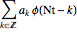
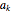
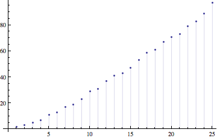
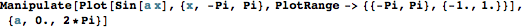
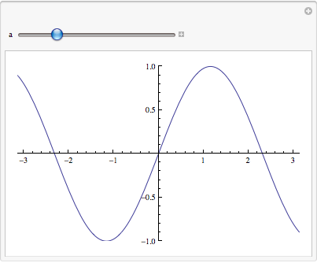

Example post
Few months ago someone told me “Wavelets? I thought nothing was happening with wavelets”. Well, it is interesting to see that we see in the literature that wavelets are still there and that work on their foundations is still being carried out. Here I just want to mention two streams I want to draw your attention to.
Random walks, probability spaces and fractals
This book [1] landed recently on my hands. It starts with the scaling identity
φ(t) = N 
where sequence  is chosen with special filtering properties. Then we have the following picture:

Which goes just fine. And this is an interactive piece.
In[11]:=

Out[11]=

And this will finish the Example.